2019 News

Eastern Branch at Sutterton Saturday 7th December
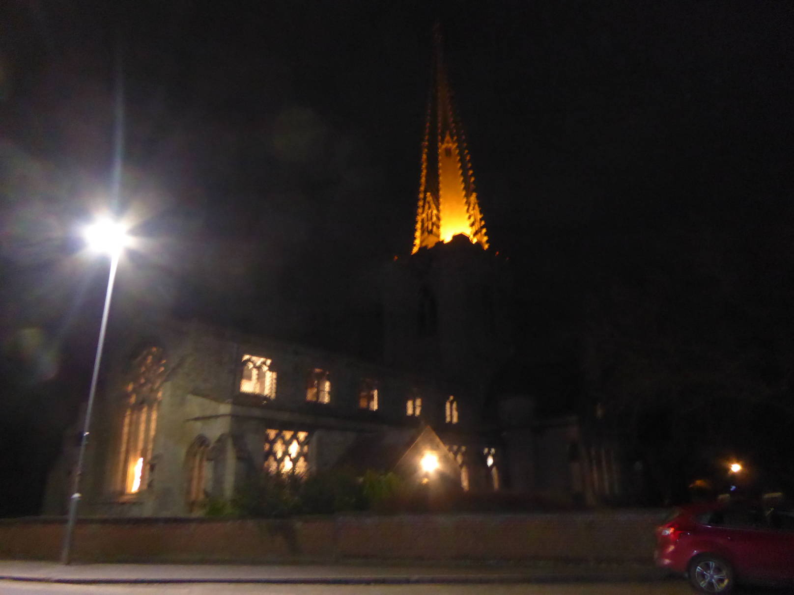
It was the night of the semi-final of Strictly Come Dancing, but despite that a good turnout of ringers met at St Mary the Virgin, Sutterton to ring the eight bells. Missing both the ringing master and the assistant ringing master, Ian Ansell ran the ringing until Mick Smith arrived, who then organised the ringing for the rest of the evening.
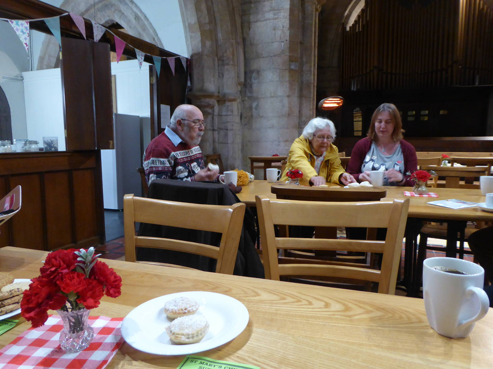
We were pleased to welcome visitors from Elloe Deaneries, Central and Southern Branch. We had a good mix of methods from Little Bob to Surprise Major.
Halfway through, a short meeting was held, Mick Smith reported that Boston Stump will not be ringing again by the beginning of February, so a different tower is needed to hold the Eastern Branch AGM at. Bennington is unringable and likely to stay that way. Helen is retiring as Branch secretary, so a volunteer is required to fill the post.
In Guild news, Joy Lord has stood down as Safeguarding Officer, a new person is required. A set of bell plates are at Alford, collected in the scrap metal fundraising, for sale. Also some supermarkets have a community room, useful for Branch or Guild committee meetings, available for use for free.
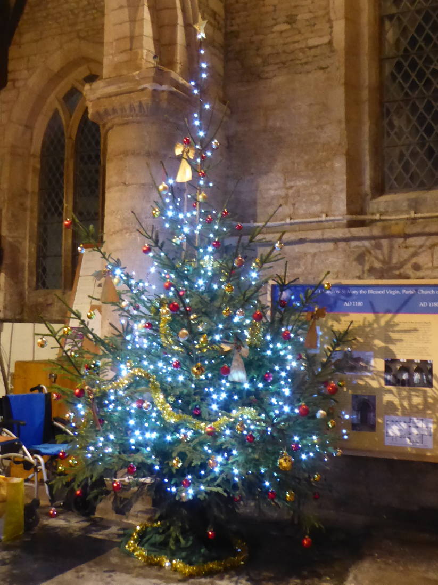
After the bells had been rung down, Penny Fountain and Ian Ansell made hot tea and coffee to go with the delicious mince pies which Helen had made, there were biscuits too. Penny had even turned on the Christmas tree lights, what a warm welcome on a cold evening. Thank you to all involved in making it such a good event.
Text and photos: Val Wild
Elloe Deaneries Practice at Surfleet Friday 15th November 2019
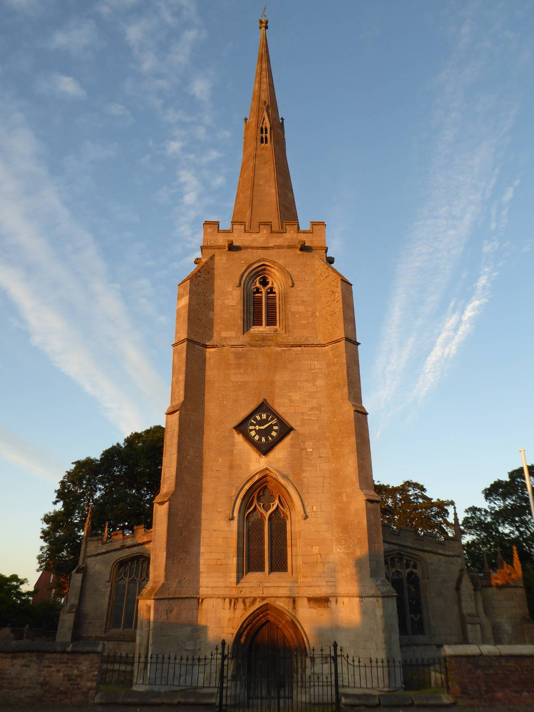
The Elloe Deaneries ringing at Surfleet on Friday morning, 15th Nov to which the EB had been invited, went well with approx two dozen ringers present. ED ringing master Paul Doades was in charge and there were a variety of methods rung to suit those present.
Lunch followed two hours of ringing, next door to the church in The Fraiser Room. Homemade steak pie or sausages were on offer and then a choice of hot or cold pudding.
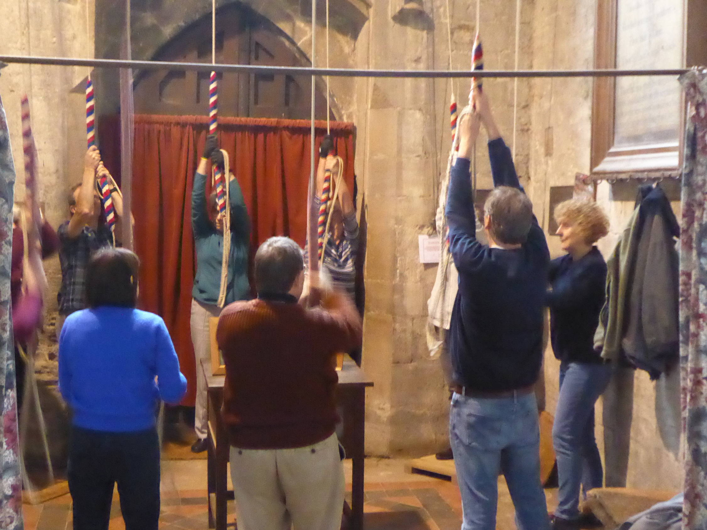
Guild cards and calendars were on sale, all monies raised supports the work of the Lincoln Diocesan Guild. Ringers visiting Surfleet for the first time were interested to see how much the tower leans!
Text and photos: Val Wild
Eastern Branch Practice at Stickney Saturday 2nd November 2019
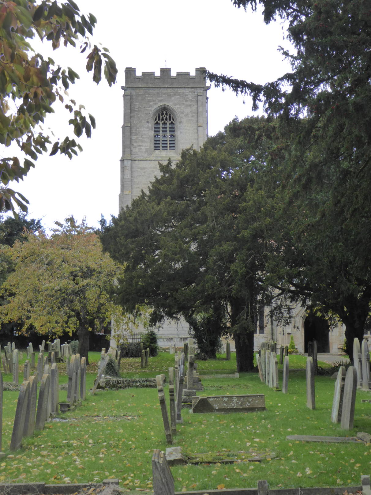
A warm welcome awaited the Eastern Branch ringers who turned up at the ground floor ring of six at St Luke's, Stickney on Saturday 2nd November 2019, despite the alternative attractions of bonfire celebrations and England playing rugby in the World Cup in Japan.
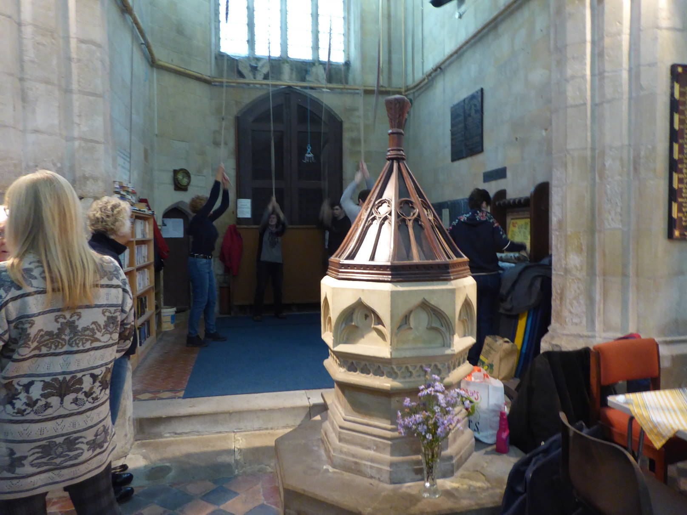
The church was holding a jumble sale, which meant the heating was on, also that refreshments were being served. Tony and James Barker checked upstairs, adjusted the ropes and the bells were ready to be rung up. A variety of methods were rung, Tony Barker Eastern Branch ringing master was in charge, and it was good to have a three visitors, one from the Central Branch, one from Bradford and one staying in Wainfleet for a few days.
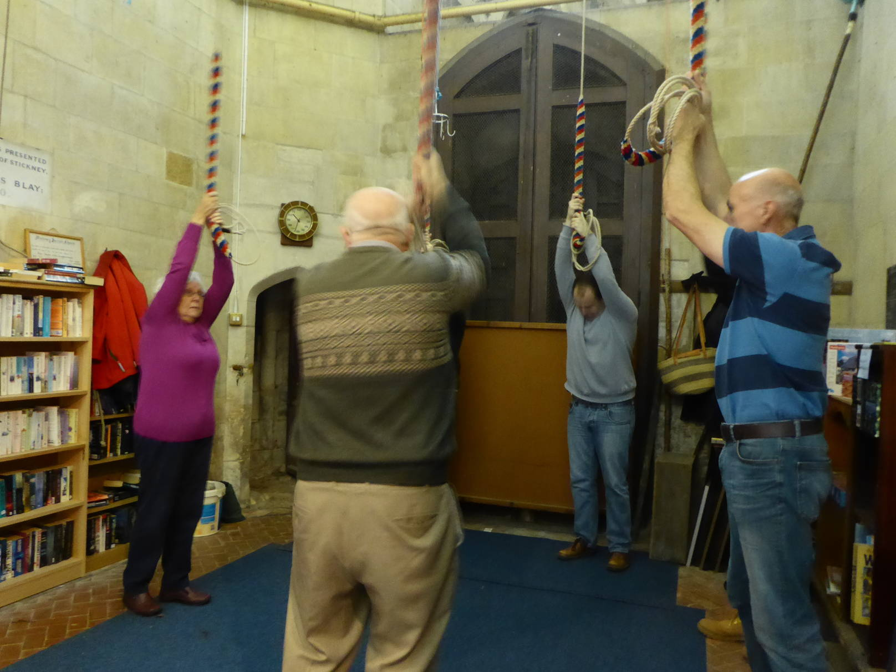
Guild Christmas cards and calendars were on sale throughout the practice, all money raised helps the work of the Lincoln Diocesan Guild. The tea, coffee and cake were all enjoyed by the ringers, the local parishioners and vicar said how much they had enjoyed having the bells rung.
Text and photos: Val Wild
Race-Night Fund-Raising Event - Alford - 26 Oct 19
The Eastern Branch's fund-raising event in support of the Guild was held on the evening of 26 October at Alford Church Hall. Once again the event was a Race Night, the 'Betty Collett Cup Meeting', which now seems to be a fixture in our year.
There was a full race card of 9 races, each race having 8 horses. All of the horses in the first 8 races had been pre-sold to owners from throughout the Guild for the very modest sum of £2-50 each!
Thanks go to all our owners, and to our two race sponsors: Willoughby Tree Services and David Reynolds, Motor Mechanic.
The winners of the first eight races and their owners were:
1. Skegness Donkey - Val Wild
2. Ranza - Sally Sivil
3. Mr. Pitiful - Tess Rowland
4. Bess - Bobby Blake
5. Marshman - Keith Faulkner
6. Shepard's Way - John Collett
7. The Three Scrapiteers - Richard Willoughby
8. Stedman - Jill Day
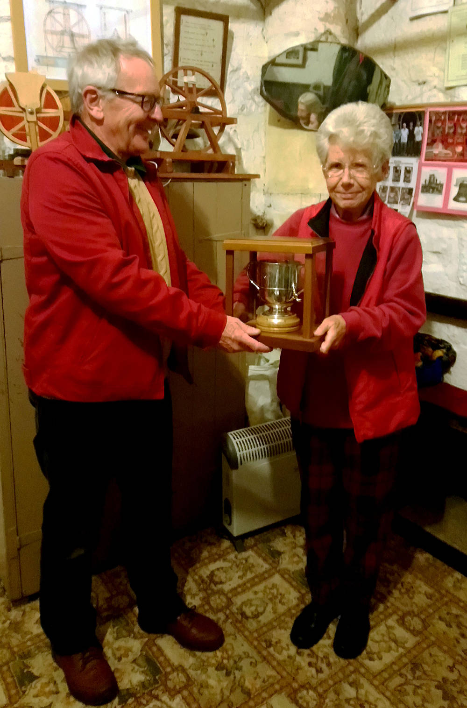
The Betty Collett Cup
The last race of the night was the 'Betty Collett Cup'. This was a race-off between the winning horses from the previous eight races.
The winner of this race was 'Stedman', owned by Jill Day. Jill will be the proud holder of the Betty Collett Memorial Cup for the next 12 months,
and she was also awarded a Gift Voucher kindly donated by John Collett.
'Marshman' owned by Keith Faulkner came second, also earning his owner a Gift Voucher donated by John.
At the halfway point in the proceedings there was a welcome break for a supper of jacket potato and lasagne followed by a crumble and custard, produced by Caitlin Meyer ably assisted by Richard Willoughby and their team of helpers.
The raffle provided more fun and prizes, raising £107.00, and our thanks go to all who donated prizes.
Overall, including the raffle, we raised £767.85 for the Guild (a record for the event!), for which our thanks go to all who participated in any way in the evening. This year, the proceeds will be donated to the Guild's Training and Recruitment Fund.
Phil Ford
Guild 8 Bell Striking Competition Results
The Guild 8 Bell Striking Competition was held at Kirton in Lindsey - St. Andrew on Saturday 19th October. The results were as follows:
1st West Lindsey - 55 faults
2nd Southern - 70
3rd Central - 90
4th EB South - 120
5th EB North - 140
6th Northern - 233
Everyone rang a 224 Little Bob Major as the test piece. The judge was Robert Jordon from Hessle.
The refreshments were great!
Eastern Branch Outing to Yorkshire 5th October 2019
Not only did Market Weighton welcome the world, they also welcomed the Eastern Branch ringers, but not before we'd been to Hessle, Kirk Ella and Beverley St Mary.
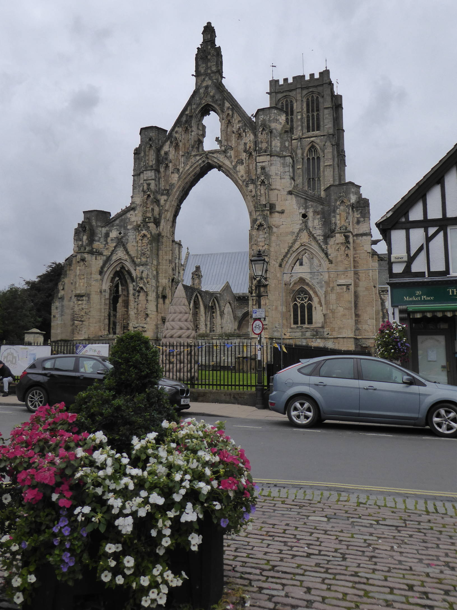
On a beautiful, sunny, Saturday morning we headed off north, to cross the Humber and visit our first tower of the day, All Saints, Hessle, a ground floor ring of eight. After 45 minutes of ringing we lowered the bells again and drove to Kirk Ella.
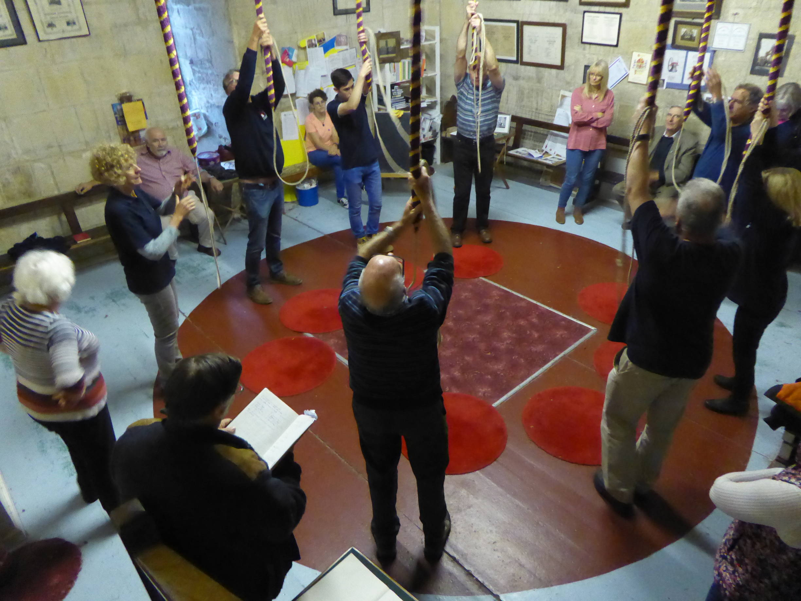
Here, another ground floor ring of eight (19cwt) was enjoyed, with a good mixture of methods to suit those present.
Then on to Beverley, St Mary's a recently augmented 12 (plus 1), where the youngest member of the party made ringing the 34 cwt tenor look easy. For some, it was the first time ringing on 12 bells and they did not disappoint. The real ale bars open in church, made the idea of a liquid lunch quite appealing to some members of the Branch.
Market Weighton, All Saints followed the lunch break. The flags, banners and bunting were all still in full flight, left over from the cycling events the previous week. The eight bells were put to good use, before we set off for Eastrington.
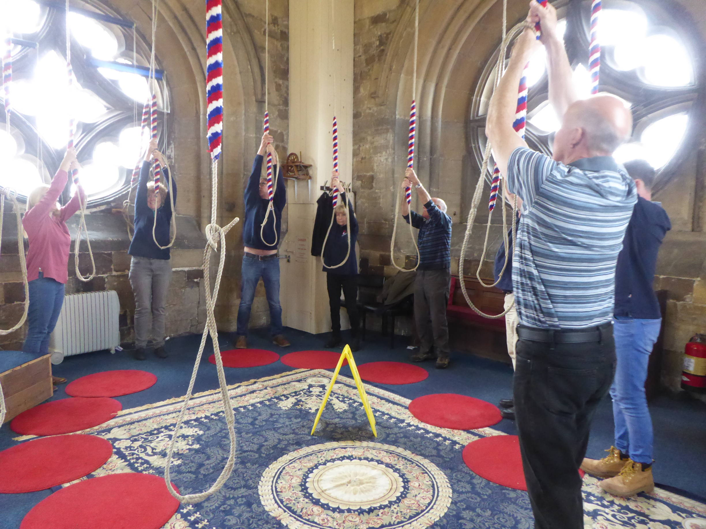
Here, St Michael's church was decorated for the harvest festival. The easy going, ground floor six were soon rung up and the ringing commenced.
Not far away was the final tower, Howden St Peter, saving the best until last. After an interesting walk along the roof to gain access to the ringing chamber, we were treated to a superb 22 cwt eight.
Our thanks must go to all the incumbents for permission to ring, the people who turned out to meet and greet us, but mostly to the Barker family for their excellent planning and organisation. What a great day out bell ringing.
Text and photos: Val Wild
Guild 6 Bell Striking Competition
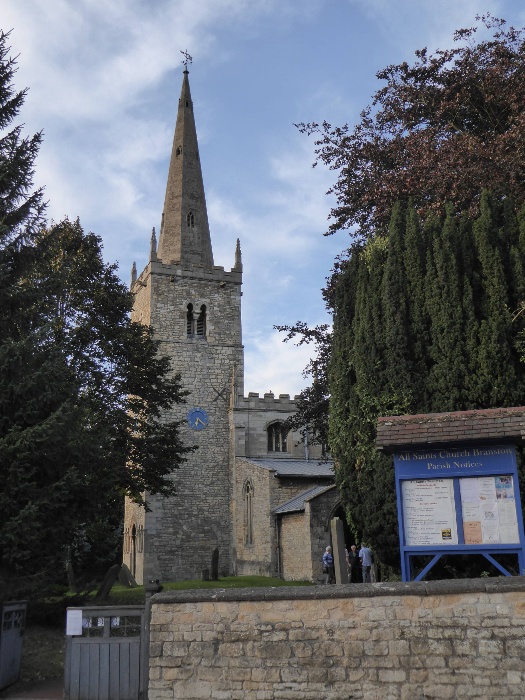
The Guild 6 bell contest was held at Branston and Nocton on Saturday 14th September. It was the anniversary of the first 6 bell contest held at Branston 50 years ago organized by the late Dennis Frith.
The judges for the John Freeman Cup in the method ringing were, fittingly, John Freeman's daughter and her husband and the judges for the Ted Colley Plate in the rounds and call changes were Kath and Tony Cocks.
It was a beautiful day for the contest, well organized by Chris Woodcock with a marvellous tea laid on by Yvonne Woodcock and the Branston ringers. There were 6 teams in the 6 bell method ringing contest with Gainsborough being the winners of the Cup which they also won 50 years ago!
The trophy for second place went to Bourne. The other 4 teams were placed thus:
Potterhanworth, Messingham, Stow and Ingoldmells.
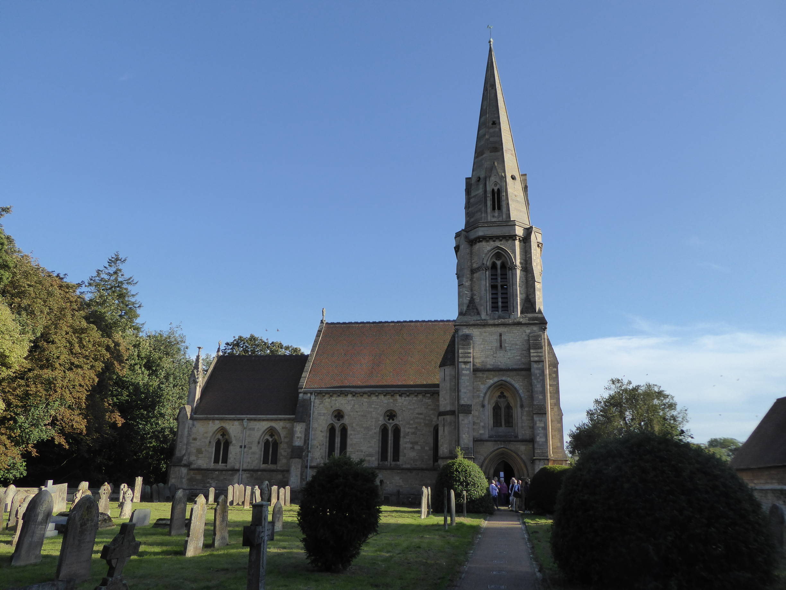
The Plate was won by Alford with a joint team from Coningsby and Old Bolingbroke coming second. The third team did not finish and therefore, was not placed. A good result for the Eastern Branch winning both trophies in the Plate contest.
Congratulations to the winning teams and to all taking part. Although Lincoln Cathedral were unable to enter a team they were represented by Les Townsend whom it is always nice to see.
The Raffle was held after tea and as none of the three winners were present they will be notified of their win.
There was also a quiz set by Chris Woodcock, testing local knowledge, which got people thinking.
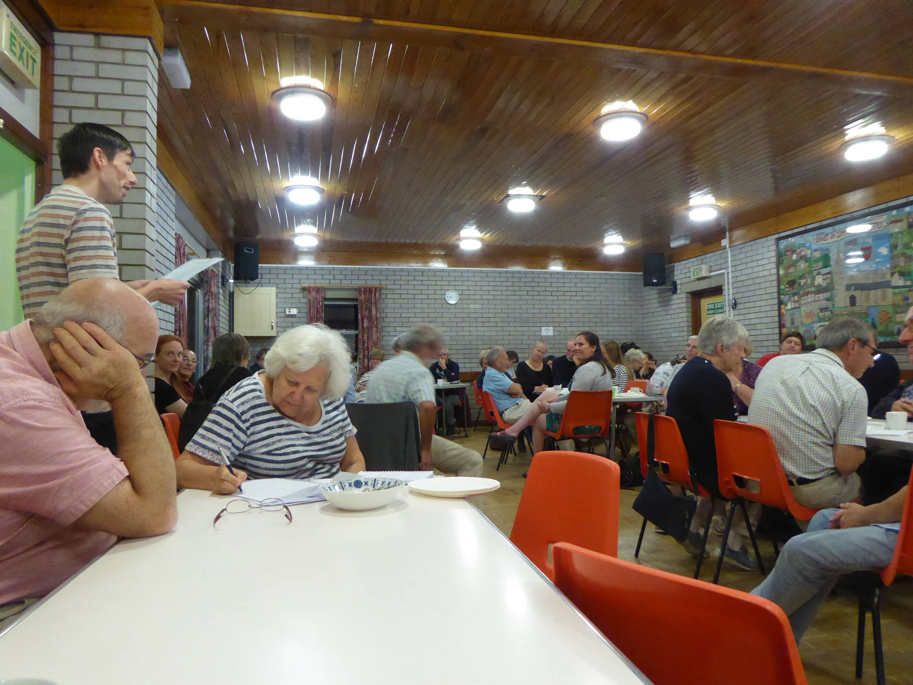
All in all, it was a very pleasant day thanks to Chris Woodcock, Yvonne Woodcock and the Branston ringers – and the good weather.
[Read the full results here]Helen Brotherton. Photos - Val Wild
Eastern Branch Practice at Sibsey
As usual, the Eastern Branch ringing meeting fell on the first Saturday of the month, 7th September 2019 and was held on the eight bells at Sibsey, with ringing from 6.30 to 8.30pm. This was following a wedding earlier in the day, so the houses within earshot certainly had the full benefit of the bells on that day.
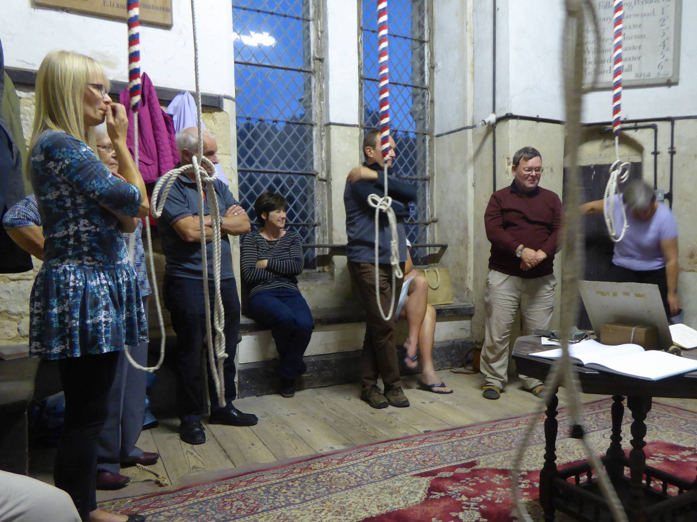
Tony Barker, Eastern Branch ringing master, was in charge and a good variety of methods were rung to suit all abilities. We were pleased to welcome three visitors from the Elloe Deaneries Branch, one from Central and two from the Southern Branch, and hope they enjoyed their evening with the Eastern Branch.
Part way through the ringing, a short meeting was held at which two new members were elected to the Eastern Branch of the LDGCBR, Jane and Philip Smith, they were welcomed to the branch. Also Jo French enquired about the possibility of help to pay for two new ropes for Butterwick, from the branch BRF when the time arrives, as signs of wear are now showing. The President Mick Smith, who was chairing the meeting, announced his decision to stand down at next year's AGM in January. There was mention of the branch outing to Yorkshire on 5th October, all welcome. There weren't enough people interested in going by coach, so it will be cars again this year. The race night at Alford was advertised, this is a Guild fund raiser for the Education and Training Fund, so is well worth supporting, the food is good and it is a fun evening. It's on Saturday 26th October, book the date in your diary now!
Ringing continued up to 8.30 with the beautiful sunset visible from the windows of the ringing chamber. Thanks go to all who helped make it such an enjoyable evening.
Text and Photo - Val Wild
Eastern Branch Ringing at Lincoln
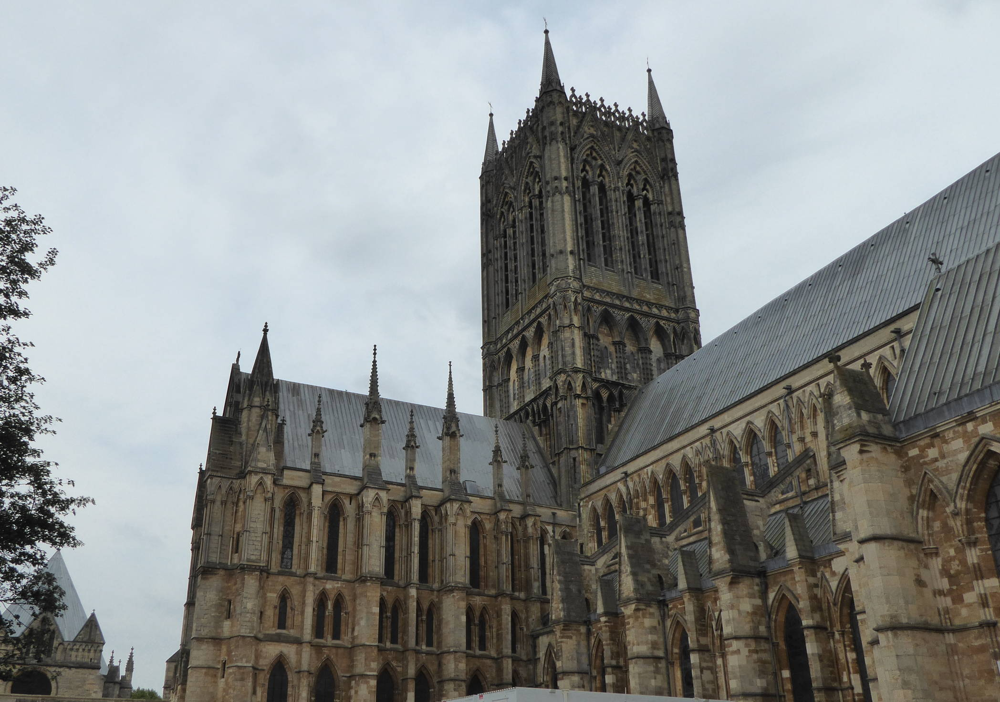
On Sunday afternoon, 4th August, we met for our annual visit, to ring for evensong at Lincoln cathedral.
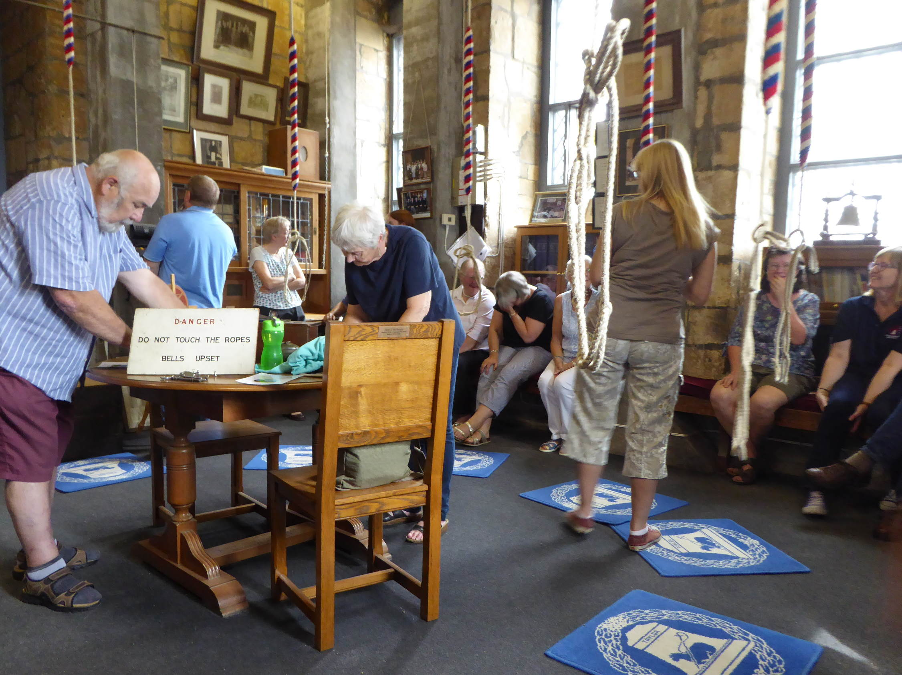
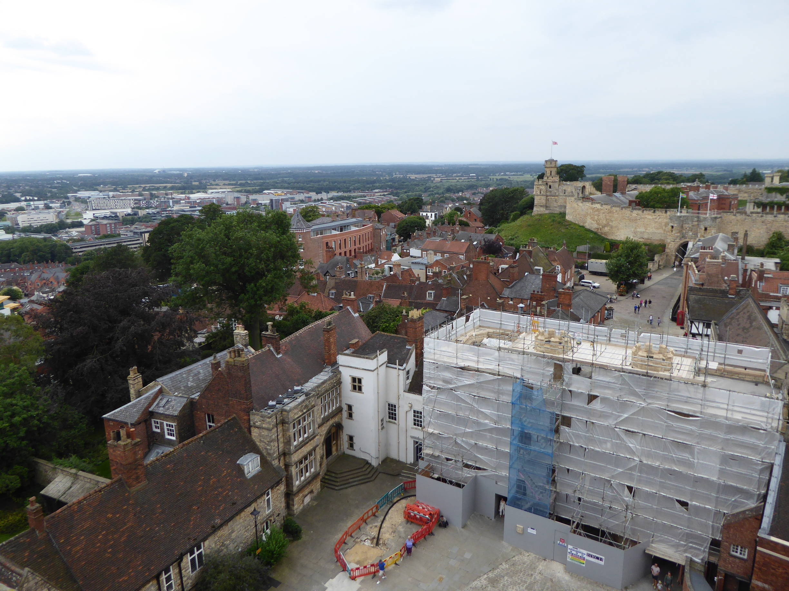
Kate Meyer was ringing master and we all had plenty of opportunity to have a ring on 12. Some of the Eastern Branch had never seen or heard 12 bells before and they thought it a joy.
We were supported by visitors and regular cathedral ringers, and their help was much appreciated.
There was time at the end for a look off the west balcony, we could see for miles.
Text and Photos - Val Wild
Eastern Branch Fundraising BBQ
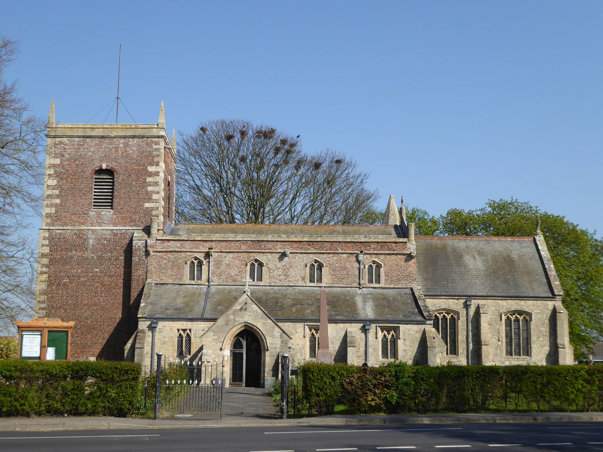
On Saturday 29th June, approximately fifty Eastern Branch members, family and friends attended the annual Eastern Branch fundraising BBQ at St Andrews, Butterwick. The weather was glorious with the day reported to be the hottest of the summer so far. The venue was very good, offering shade and excellent catering facilities. Some brave people even used the football pitch and also played bowls, it was sweat provoking just watching them.
Ringing started at 3.30 pm on the ground floor, easy going, six bells, with Tony Barker taking the lead. The ringing was spread across the abilities present, from Rounds and Call Changes, Plain Bob Doubles, Grandsire Doubles, Primrose, Plain Hunt, Double Court, Cambridge and a first for a long time for the EB a touch of London Surprise Minor. There was no lack of volunteers to stand with less confident ringers and the vicar Rev. Andrew Higginson thanked everyone for launching the Butterwick Open Garden Event in style. The bells were rung down at 5.30 pm.
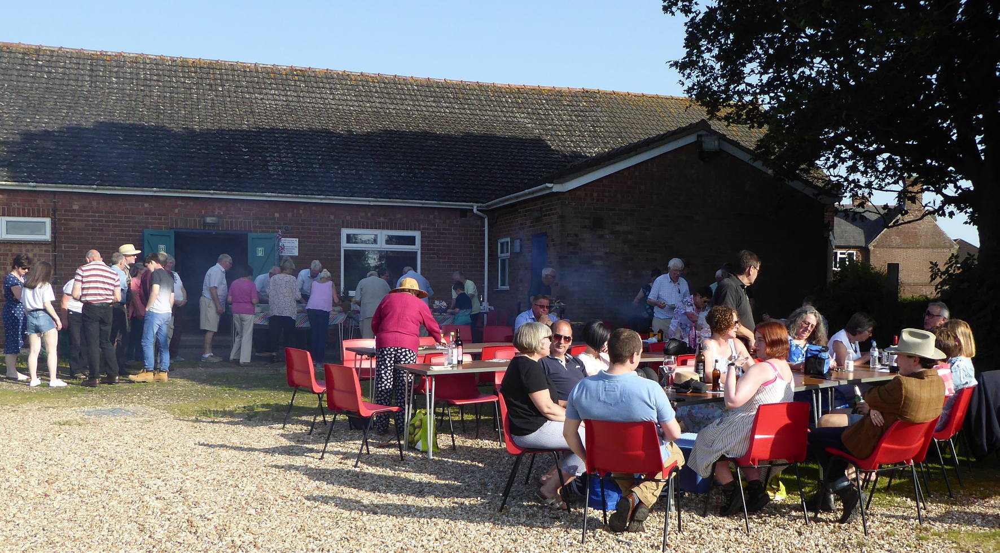
Mick Smith, Eastern Branch president, welcomed everyone to Butterwick and thanked them for their contributions to the event. Members of the Willoughby family and Edward Vear manned the BBQ and attendees brought a range of salads and mouth-watering sweets for the event. Tea, coffee and cold drinks were available, along with a quiz of bell related questions (spoiler alert - who knew there were 28 six bell towers within the EB, which accounted for a lot of points for some people)!
David Bennett announced the quiz answers, maintained control as the judge's decision was final, and awarded the prizes. A raffle was also run to help swell the funds, the caller was Jan Clark, ably assisted by the youngest person present, Daniel Willoughby. We were pleased to be joined by visitors from Central, Southern and Elloe Deaneries Branches.
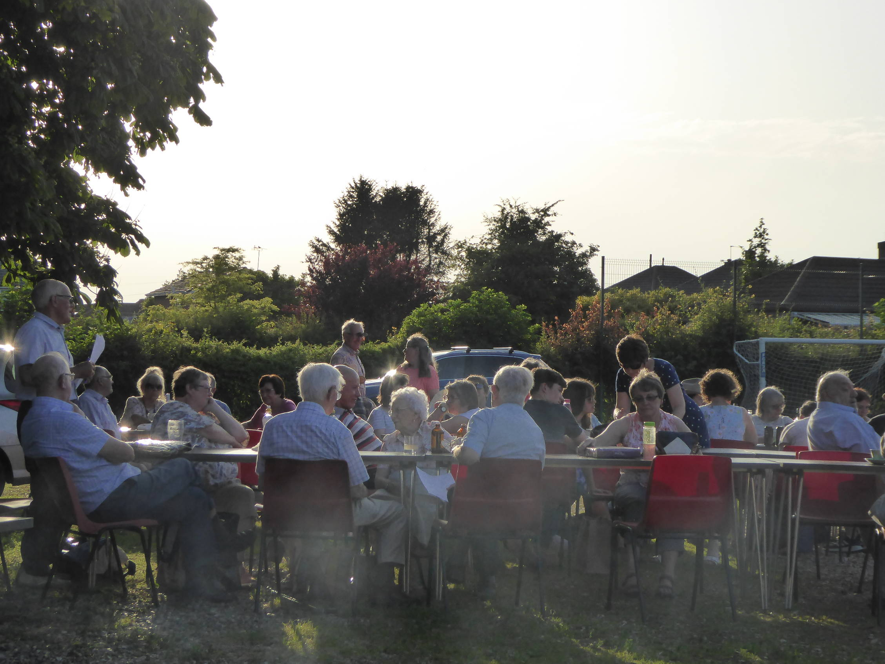
Thanks go to everyone who helped make the event so successful. If everyone does a little a lot gets done, and on Saturday it did, raising a fantastic £320 for the Eastern Branch bell repair fund.
Tess Rowland, Photos - Val Wild
Eastern Branch 6 Bell Striking Competition
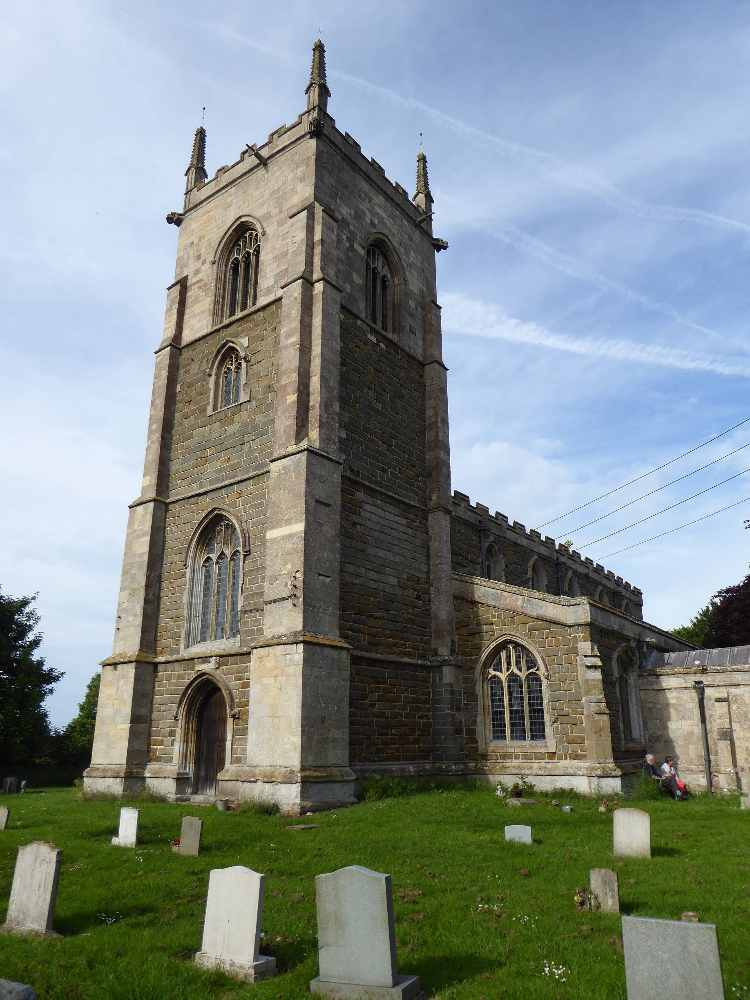
On Saturday 1 June 2019 the East Branch held their 6 bell striking competition at All Saints Church Croft. It was a glorious evening and approximately 40 ringers and friends attended the event. All Saints Church is a Grade 1 listed building dating from the 14th century, built of greenstone and standing centrally within the village of Croft. The western tower houses a ground floor ring of 6 bells (10-0-16 – (515 kgs)) and as it is a ground floor ring the draft was quite long.
Four teams entered the competition which was judged by Sylvia Taylor, ably assisted by Alan Bird. Rules were distributed to the teams before the competition began. The results were as follows:
FIRST PLACE: BOSTON - 95% - 12 faults:
Practice piece: The time was used well with call changes.
Competition piece (8 min 55 sec): Confident ringing, with some hesitation mid row which incurred faults. Good leading with steady cover.
Sam collected the Trophy and dedicated the win to the memory of Tom Palmer who died on 24 May 2019 and will be sadly missed.
SECOND PLACE: INGOLDMELLS - 94% - 14½ faults:
Practice piece: Confident call changes.
Competition piece (8 min 45 sec): Confident start. Some slow leads which caused clips later in the row. Going nicely but unfortunately at 4 min 55 sec there was a method mistake which caused issues, but team went on to make a good finish.
THIRD PLACE: ALFORD - 91% - 22½ faults:
Practice piece: Call changes and a good use of time.
Competition piece (8 min 48 sec): Approximately 2 minutes was spent settling down. Consistent leading throughout (no fault gained from lead or tenor). Faults gained with inconsistency in middle or rows.
FOURTH PLACE: CONINGSBY - 79% - 51 faults:
Practice piece: Rang steady which settled down nicely.
Competition piece (9 min 01 sec): 2½ minutes in good rounds, early changes made with confidence. Tenor even beat throughout. Mainly clips as opposed to clashes caused faults. Good effort.
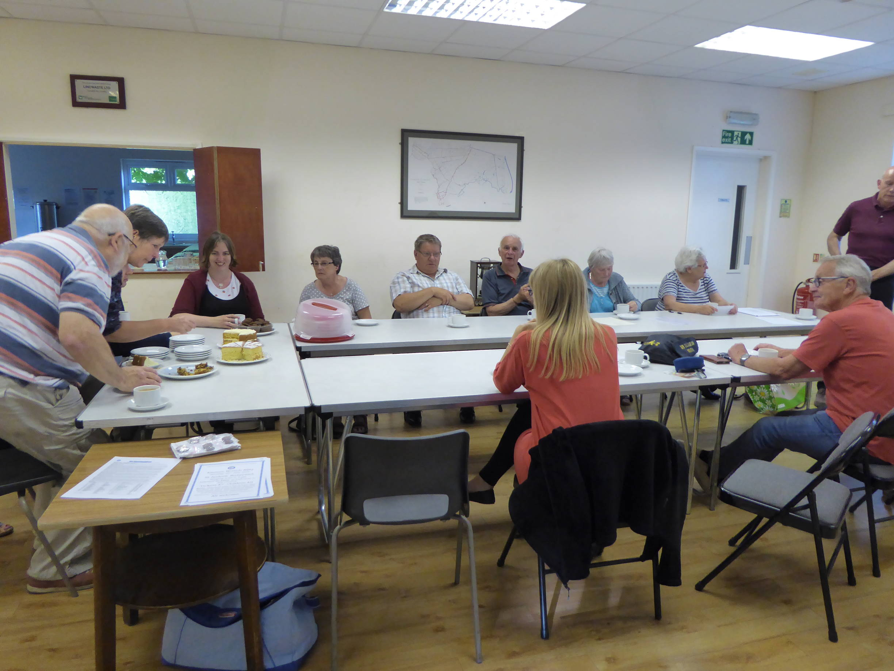
Following the ringing tea, coffee and cakes were served at the Village Hall where a quick meeting was convened: Mick Smith welcomed all present and thanked Sylvia and Alan for all their hard work and positive comments.
Other matters: John Turner was elected as a member of Eastern Branch; proposed by Tony Barker, seconded by Phil Ford. Jane and Phil Smith were given forms to submit to become members of the Eastern Branch. A reminder and posters handed out regarding the Eastern Branch BBQ on 29 June at Butterwick.
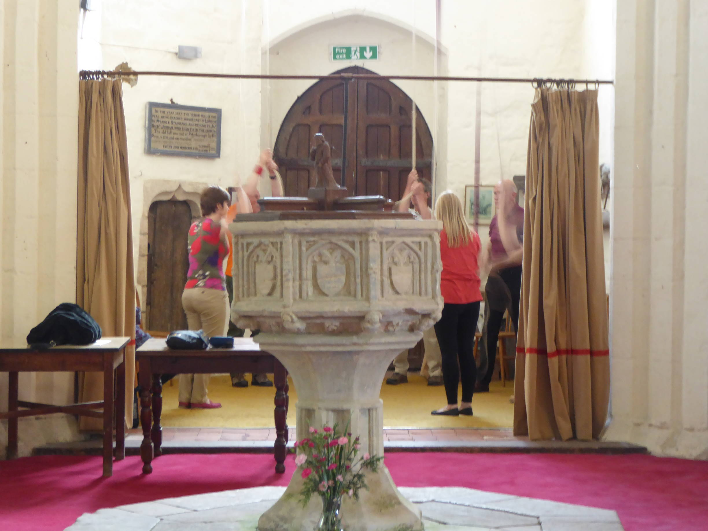
Audrey Harrison requested help with the 6 bell simulator at Heckington Show on 27-28 July, please contact her direct for more details. Thanks go to the ladies who supplied the cake and refreshments and everyone who helped make the evening a successful one especially Sylvia and Alan.
Tess Rowland. Photos: Val Wild
EB Practice at Old Bolingbroke
On Saturday 4th May Eastern Branch ringers met at Old Bolingbroke for a Branch practice.
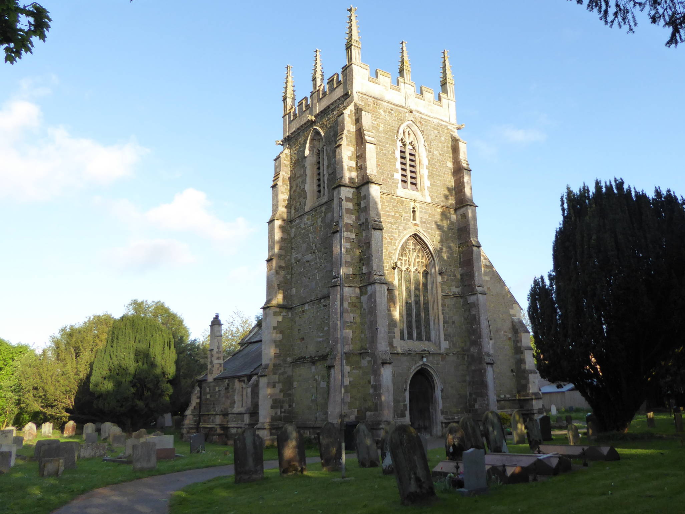
The ringing was run by the EB Ringing Master Tony Barker.
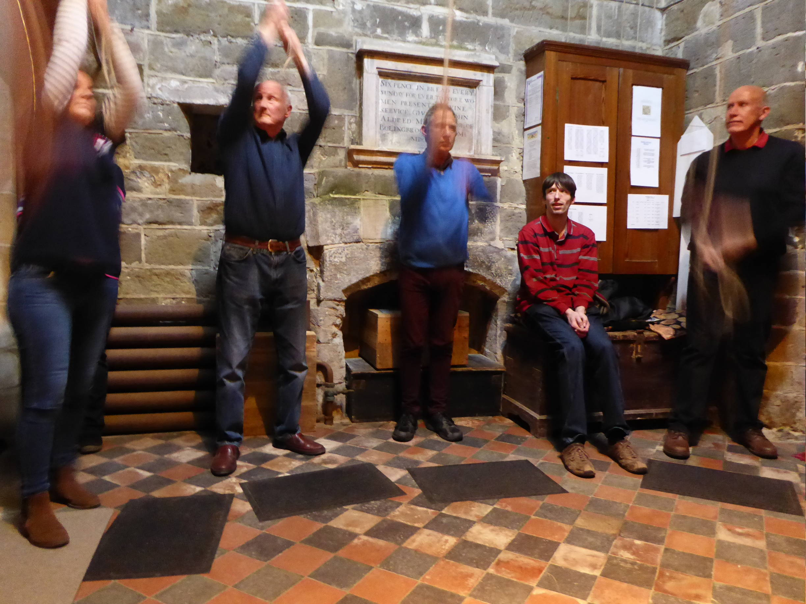
The tea and coffee were most welcome!
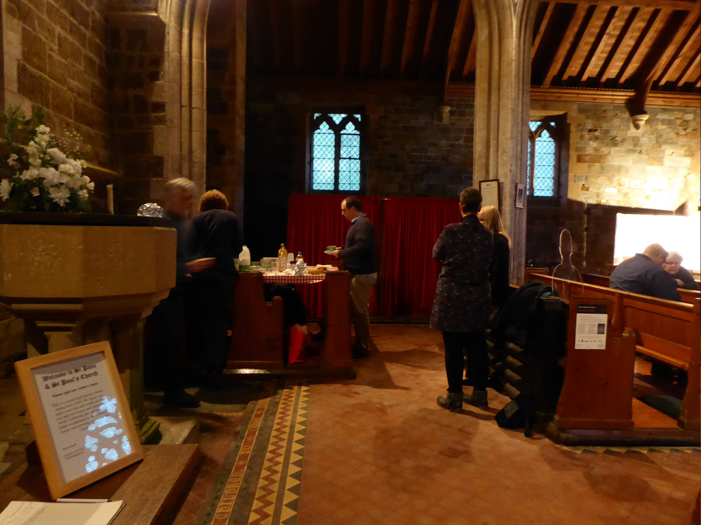
Photos - Val Wild
EB Practice at Addlethorpe
On Saturday 6th April nineteen ringers met at Addlethorpe for a Branch practice with eight towers being represented. It was a very cold night and the heater was made much use of. Prior to the meeting there was a short committee meeting. With two members of the committee unable to attend because of accidents and one for family reasons there were only just enough committee members to hold a meeting. We wish the two who had accidents, Edward Vear and Val Wild a speedy recovery.
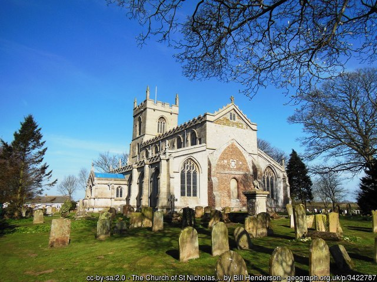
The ringing was run by the EB Ringing Master Tony Barker. We rang some rounds and call changes for the learners and rang the Treble bell to ring seven bells for some Grandsire Triples. The President, Mick Smith listened outside to this and was less than impressed with the sound. Thereafter, we rang on just the six bells with London Surprise Minor being the favourite method, it being rung three times, with the first time being the best. We also rang some Plain Bob Doubles, Grandsire Doubles and some St. Clements with Sam Napper attempting some calling.
The EB Secretary was very pleased to unload a lot of the recently printed 2018 Annual Reports to the members.
It was a good-natured meeting despite the cold and ran for the full two hours scheduled for the practice after which we were all pleased to go home and get warm.
Helen Brotherton.
Branch Practice at Frampton
On Saturday 2nd March, Eastern Branch were welcomed to St Mary's Church, Frampton for a District Practice. 18 members of Eastern Branch attended, with another visitor from Keighly, West Yorkshire.
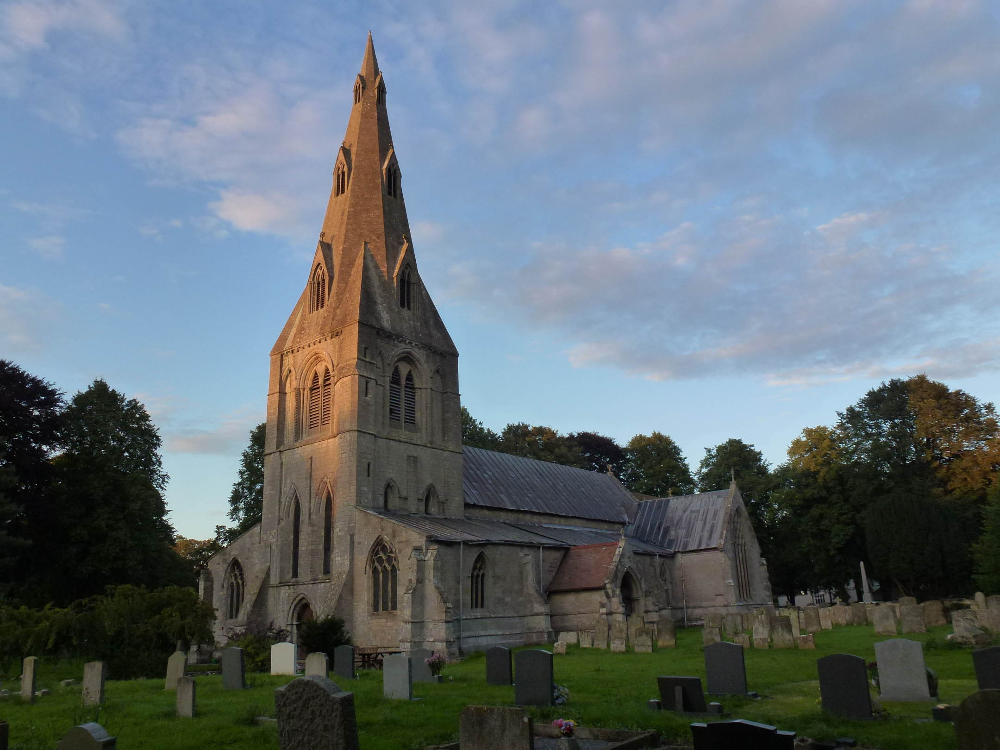
A good variety of ringing was had. In addition to Rounds and Call Changes, Plain Bob Minor, Grandsire Doubles, Plain Bob Doubles, Single Oxford Bob Minor, St. Clements College Bob Minor, Kent Treble Bob Minor, Cambridge S. Minor, Norwich S. Minor, London S. Minor, Spliced Minor: Bourne, Norwich, Cambridge, Plain Bob Minor, and Little Bob were rung.
One of our new members, Louise Bullen, remarked:
"I am one of the newly taught ringers at Old Bolingbroke. I originally attended an Open Day last April in Old Bolingbroke where I was introduced to bell ringing at a taster session. I then rang as part of the 'Ringing Remembers' initiative and I'm extremely proud to be continuing a long tradition of bellringing in the village under the expert guidance of Colin our Tower Captain.
Last Saturday I joined the Eastern Branch at Frampton. As I'm sure is the same with all new recruits I lack in confidence and I'm continually striving to improve my technique. I now ring unaided and I'm currently ringing call changes. The opportunity to ring at different towers in the county has improved my confidence and I am really inspired by the other ringers I've met.
At Frampton I was made to feel very welcome. I rang five sets of rounds with call changes on bells 3 and 4. It was a fantastic opportunity to ring with people I had met at the Eastern Branch AGM and people I hadn't rung with before on bells that were new to me.
I was fascinated by the variety of methods that were rung and equally inspired by the session ending with a 'spliced method' - it seemed that the ringers travelled around the country from Kent to Cambridge and further afield!"
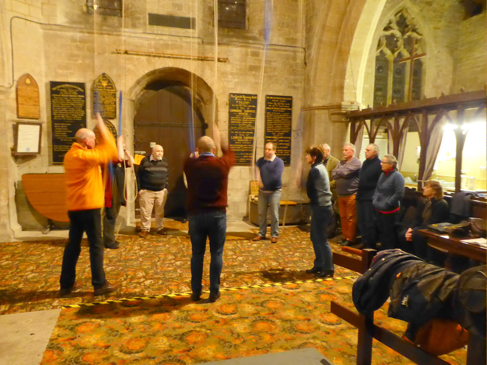
This highlights the excellent achievement of Ringing Master, Tony Barker at the practice in providing a good variety of ringing to suit all abilities. A very enjoyable evening. We are looking forward to the next District Practice on 6th April at Addlethorpe.
Colin Simpson, Old Bolingbroke
Eastern Branch Annual General Meeting
The 50th anniversary of the installation of the bells at Ingoldmells is in 2019. It was, therefore, thought appropriate to hold this year's AGM at Ingoldmells. It was a good-natured meeting with ringing at Ingoldmells varying from Rounds and Call Changes to Double Norwich, Bristol and a well struck course of Yorkshire.
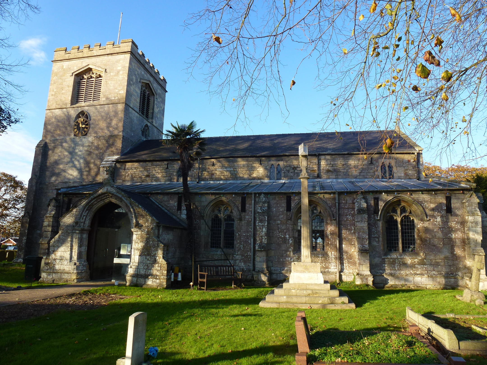
The ringers were in good spirits. Carol, the Vicar's wife was on hand to serve welcome cups of coffee and her husband the Rev Richard Holden took the well attended service where a good noise was made with the singing - so good that we had three hymns! Afterwards we went to the church hall for a hot meal cooked by Isabel Barker.
Twenty-six people attended the AGM, and we welcomed Guild Master Chris Turner to the meeting. The meeting began with a one minute silence in memory of Rhoda Reynolds who had passed away the previous year.
All the officers were re-elected, the Secretary offering to stand down after serving for three years but agreed to stay on for another year. There were three new members elected from Old Bolingbroke. All three were present as was the Proposer, Colin Simpson, Tower Captain at Old Bolingbroke who vouched for their competence and they were seconded by Annie Hardwick who was also present at the meeting.
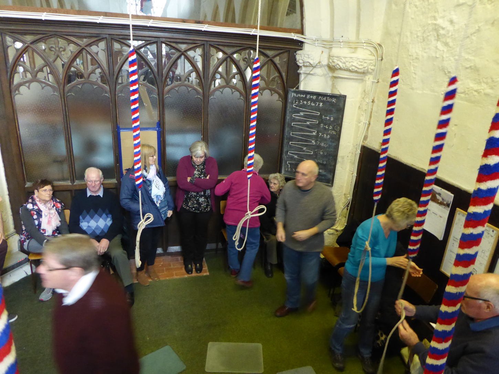
After the meeting ringing recommenced with various methods including an attempt at a touch of Original. Afterwards some of the ringers went back to the church hall to hear and see a presentation by Clare Barker of her trip to Nepal. After this we were joined by members of the congregation and enjoyed another cooked meal by Isabel.
This was followed by a quiz with John Turner, Tower Captain at Burgh acting as Quiz Master. Needless to say, that our table - all ringers - Don and Sue Hare, Caitlin Meyer, Jo French, Bill and I won the quiz by about 7 points. There were two raffles with various prizes; the raffle during the meeting raised £51 for the Eastern Branch bell repair fund.
Helen Brotherton.